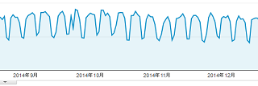

2017年の祝日はサイト運営に都合がよい
2017年は祝日が土曜日とかぶってしまうケースが４回あり、この場合は振替休日とならないため、土曜日も休みの人は実質的に祝日が消えてしまうことになります。このため、例年よりも休日数が少ない年となりそうです。
これを行政機関の休日を基準に考えますと、ここ数年は「123日」で推移していましたが、2017年は「119日」となり、前年よりも4日間少なくなっています。
一方、自サイトの傾向でいえば、休日にはアクセス数が減少する傾向があり、加えて休日の前日も減少してしまう傾向があるため、休日数の少ない方が大変都合のよい側面があります。
こちらの画像は数年前に、こちらの記事で更新した内容になりますが、土日にアクセス数が減少することにより、規則正しいチャートが形成されています。

僕の実感では、平日のアクセス数を100%としますと、土日には70%程度までアクセス数が減少してしまう印象があります。加えて、休日の前日も80%程度にまで減ってしまう傾向があるのです。
平日 → 通常 → アクセス数 100%
土曜 → 激減 → アクセス数 70%
日曜・休日 → 激減 → アクセス数 70%
休日の前日 → 微減 → アクセス数 80%
つまり、土日が休みの週はアクセス数の減少を最小限に抑えることができます。
■土日が休み
月 火 水 木 金 土 日
激減 → 土・日
微減 → 金
一方、週の真ん中あたりに祝日を挟む場合は非常に効率が悪いです。
■水曜日が休み
月 火 水 木 金 土 日
激減 → 水・土・日
微減 → 火・金
これはサイト収益とも連動している傾向がありまして、2012年に休日数が118日と大幅に減少した年度に関しては大幅にサイト収入が増加しております。
よって、2017年は自サイトにとって飛躍の年になることでしょう。